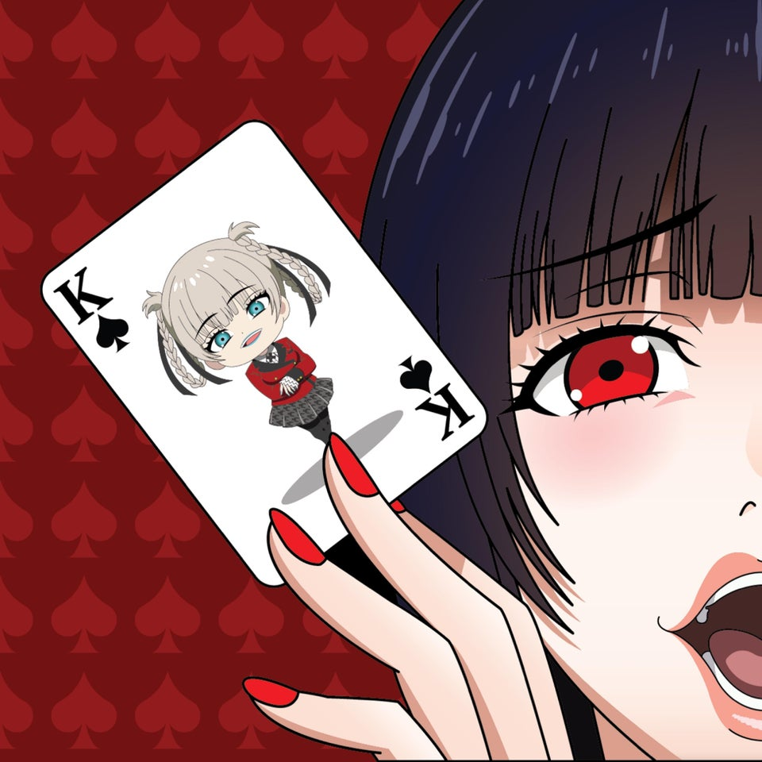

Jabami Yumeko
Yumeko es una persona amable y tierna, la cual a primera vista no siente odio o
compasión por la gente sin embargo cuando esta se sienta en la mesa de juego, se vuelve obsesiva. No le importa
ganar o perder, dado que ella busca el riesgo de las apuestas, se puede decir que no es muy prudente con las
decisiones que toma. Le gusta ver cómo sus contrincantes manipulan los juegos, ya que así hay más posibilidades
para manejar el juego.
Sin embargo, ella es una persona cuerda y consciente de lo que pasa a su alrededor y
muchas veces se la ve actuando como una persona normal lo haría. Yumeko Jabami es una mujer excepcional.
Momobami Kirari
Kirari se muestra como una chica bastante educada y con muy buenos modales, que
hasta ahora, le ha encantado ver cómo las demás personas apuestan lo más preciado para ellas (siendo la dealer
en el encuentro entre Manyuda y Yumeko, y en el enfrentamiento entre Igarashi y Yumeko).
Es muy tranquila, demostrándose cuando, a pesar de que casi todo el Consejo haya
sido derrotado por Yumeko, parece no importarle mucho.
Saotome Mary
Después de perder ante Jabami Yumeko y experimentar la vida de ser una mascota,
Mary se desespera por recuperar su estatus dentro de la academia, sin tener otro objetivo en mente. Poco
después de ser humillada, Mary finalmente pierde su orgullo, sufre un colapso mental durante un partido contra
Yuriko y cae en un estado de pena y vergüenza. Después de recuperar su estado, parece que ya no es tan
arrogante y cruel, a veces solo la molesta la cobardía de Ryota o el comportamiento imprudente de Yumeko, pero
aún se preocupa profundamente por ellos. También desarrolló un gran odio hacia el consejo estudiantil,
deseando que pagaran por lo que le habían hecho a los animales domésticos.
(Sin duda el mejor personaje)
Momobami Ririka
Ririka se ve como un personaje bastante silencioso y misterioso, mostrándose pocas
veces en el anime y el manga junto a la presidenta del consejo estudiantil.
Cuando choca con Saotome se le cae su máscara, sufriendo un cambio impresionante de
actitud, volviéndose una chica bastante tímida y sensible, pero recobra su personalidad fría al ponerse de
nuevo la máscara.